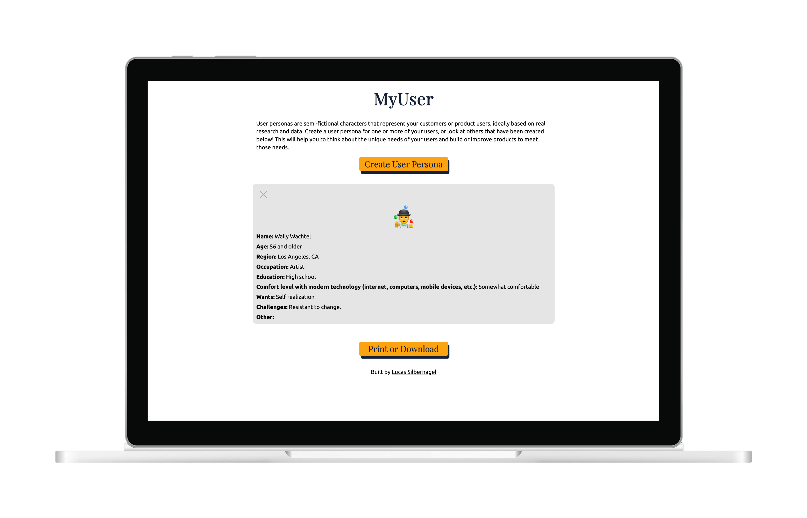
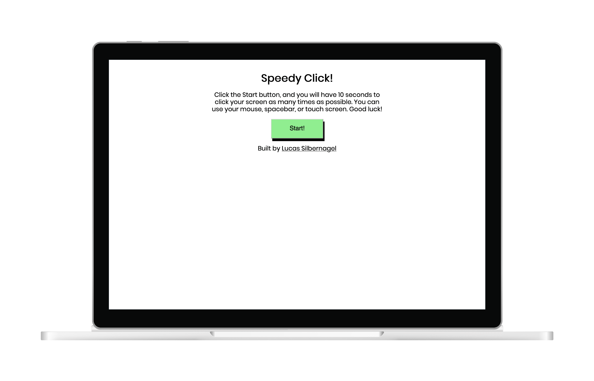
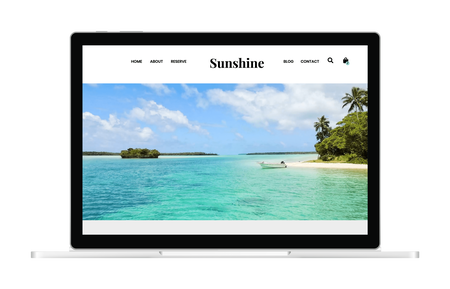
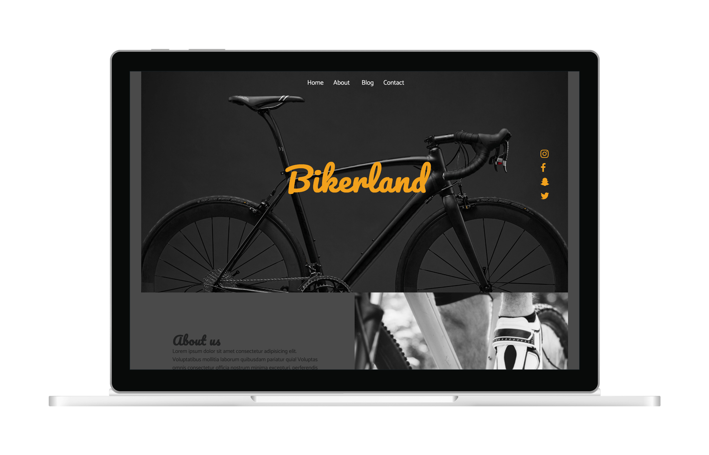
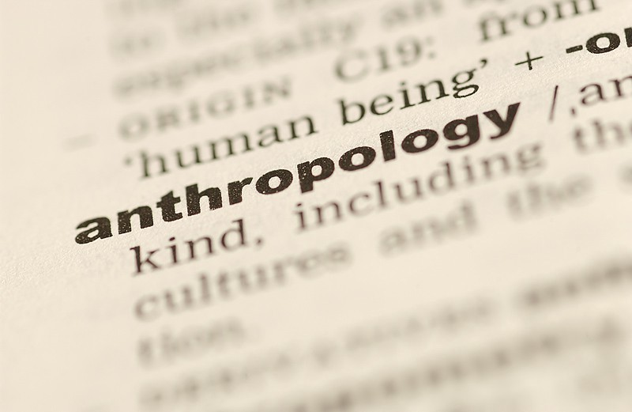

About
Hi, I'm Lucas! As a recent graduate of Juno College, I’m an expert in front-end web development tools including React, jQuery, JavaScript (ES6), HTML5, CSS3, Firebase, SCSS, Git, APIs, and more.
Prior to attending Juno College, I earned a Master’s degree in sociocultural anthropology from the University of Toronto. Anthropology is the study of humanity, human behaviour, culture, and society in both the past and present. This dovetails perfectly with the goal of user experience (UX) design, which is to understand and learn from product users in order to improve the experience and ease of use for those users. I’m on a mission to build websites and applications that can be enjoyed on any modern device and by any user, one line of code at a time!
I also have considerable experience working in sales and customer service, where I honed skills such as client management, troubleshooting technical problems, content management systems, and training new teammates.
If you are interested in connecting with me, please get in touch!
Skills
-
HTML5
-
CSS3
-
JavaScript
-
React
-
jQuery
-
SASS
-
Firebase
-
Git
-
GitHub
-
VS Code
-
Web Accessibility
-
Collaboration
-
Responsive Design
-
Command Line
Projects
-

Battle Rockets!
A two-player battleship game that uses SpaceX rockets instead of battleships, with data pulled from the SpaceX Rocket API. Built in collaboration with Alisa Kitkina, Mariya Morosovska, and Miguel Cabrera.
React | REST API | SCSS | Mob Programming | Remote Collaboration
-

MyUser
User personas are semi-fictional characters that represent your customers or product users, ideally based on real research and data. Create a user persona for one or more of your users, or look at others that have been created below! This will help you to think about the unique needs of your users and build or improve products to meet those needs.
React | Firebase | SCSS
-

Trivia Quest
A trivia game based on Trivial Pursuit. Choose your difficulty level and try to score in all six categories! Built in collaboration with Heather Andreadis.
jQuery | REST API | HTML5 | SCSS | Pair Programming | Remote Collaboration
-

Speedy Click!
A simple click counter game built with jQuery. See how many times you can click in 10 seconds!
jQuery | HTML5 | SCSS | CSS3
-

Sunshine
A multi-page, fully responsive travel website based on a Photoshop design.
HTML5 | SCSS | Responsive Design
-

Bikerland
A single-page, fully responsive website based on a Photoshop design. No Flexbox or Grid styles were used, only floats.
HTML5 | CSS3 | Responsive Design | Floats
Blog
-

I’m a web developer now?! From decoding human behaviour to building the modern internet.
By Lucas Silbernagel, 29 February 2020
Like many people, my road to becoming a front-end developer was a long and winding one. While it seems as though certain rare souls easily stumble upon a skillset and career path that defines and motivates them, I’m definitely more of a jack of all trades, master of none. From high school onward, my interests and strengths included languages, writing, martial arts, music, history, film, and more. I remember enjoying a basic web design course in high school, but with my focus constantly shifting between a myriad of other interests, it was difficult to imagine pursuing a career in that field, at least back then.
I moved to Toronto in 2014 to pursue a Master of Arts degree in sociocultural anthropology at U of T. I planned to later pursue a PhD and become a professor of anthropology, but even as I boarded the plane to Toronto I had serious doubts about that career path.
Read More -
The Blind Leading the Sighted: Prioritizing Accessibility on the Modern Web
By Lucas Silbernagel, 13 April 2020
According to the World Wide Web Consortium (W3C), the main international standards organization for the internet, web accessibility means designing web experiences and technologies that can be used and contributed to by anybody. This includes people with auditory, cognitive, neurological, physical, speech, and visual disabilities.
The benefits of web accessibility extend far beyond these groups, however. Consider the elderly, whose abilities have changed due to aging. Consider people with “temporary disabilities” like a broken arm or missing glasses. Consider the wide variety of scenarios that limit or change how people interact with the internet, including devices with smaller screens like smart watches, regions with slow or poor internet connections, limited bandwidth, and situations where people either can’t listen to audio due to their surroundings or can’t easily view their screen due to bright sunlight. Web accessibility practices make the internet better for everybody by overcoming these and other obstacles.
Read More